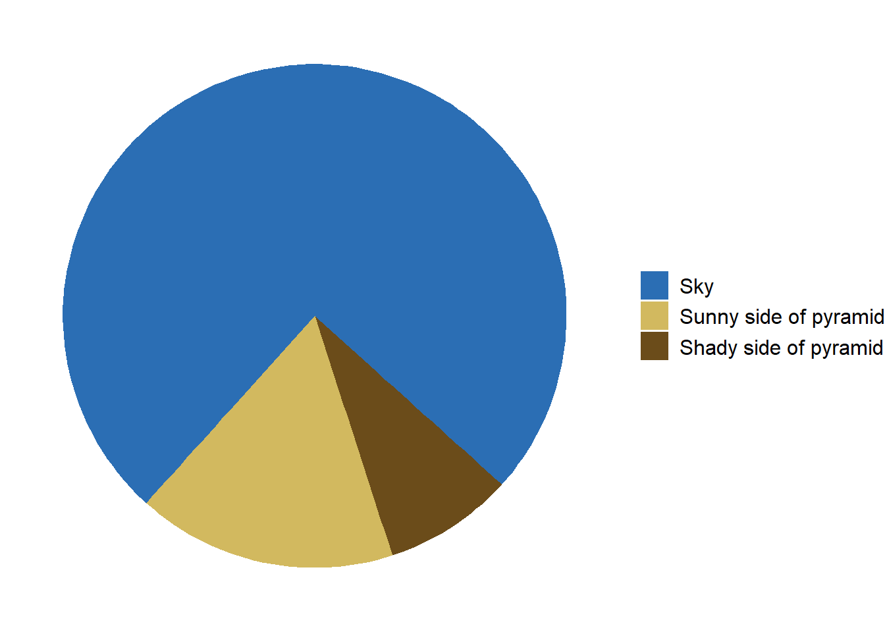
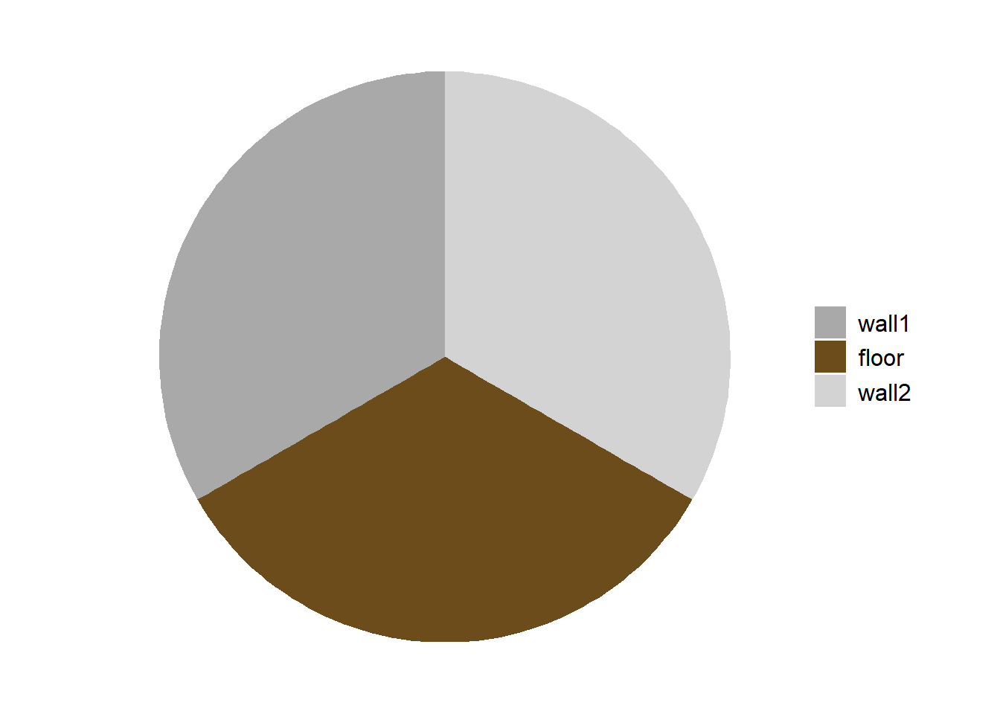
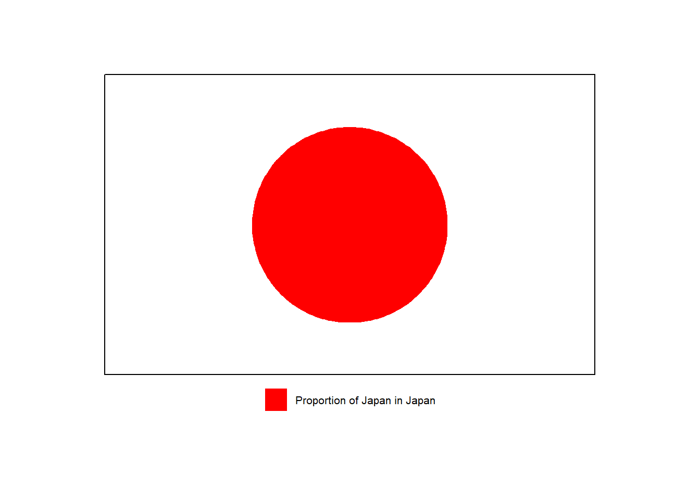

library(ggplot2)# Data preparationdata <-data.frame(category =c("Sky", "Sunny side of pyramid", "Shady side of pyramid"),value =c(3/4, 1/6, 1/12) # Adjusted proportions for the pie chart)# Create the pie chart with corrected orientation and proportionsggplot(data, aes(x ="", y = value, fill =factor(category, levels =c("Sky", "Sunny side of pyramid", "Shady side of pyramid")))) +geom_bar(width =1, stat ="identity") +coord_polar(theta ="y", start =11*pi/15) +# Adjust the start angle to place the pyramid at the bottomscale_fill_manual(values =c("Sky"="#2b6eb4", "Sunny side of pyramid"="#d2b95f","Shady side of pyramid"="#6b4c1a")) +theme_void() +theme(legend.position ="right",legend.title =element_blank(),legend.text =element_text(size =12))

Code
library(ggplot2)# Data preparationdata <-data.frame(category =c("wall1", "floor", "wall2"),value =c(1/3, 1/3, 1/3) # Adjusted proportions for the pie chart)# Create the pie chart with corrected orientation and proportionsggplot(data, aes(x ="", y = value, fill =factor(category, levels =c("wall1", "floor", "wall2")))) +geom_bar(width =1, stat ="identity") +coord_polar(theta ="y", start =0) +# Adjust the start anglescale_fill_manual(values =c("wall1"="darkgrey", "floor"="#6b4c1a","wall2"="lightgrey")) +theme_void() +theme(legend.position ="right",legend.title =element_blank(),legend.text =element_text(size =12))

Code
library(ggplot2)library(gridExtra)library(grid)# Data preparationdata <-data.frame(category =c("Proportion of Japan in Japan"),value =c(1) # Adjusted proportions for the pie chart)# Create the pie chart without the legendp <-ggplot(data, aes(x ="", y = value, fill = category)) +geom_bar(width =1, stat ="identity") +coord_polar(theta ="y", start =0) +# Adjust the start anglescale_fill_manual(values =c("red")) +theme_void() +theme(legend.position ="none",plot.margin =margin(t =20, r =20, b =20, l =20)#,# aspect.ratio = 1 # Adjust aspect ratio to make it wider )# Create a separate plot for the legendlegend <-ggplot(data, aes(x ="", y = value, fill = category)) +geom_bar(width =1, stat ="identity") +scale_fill_manual(values =c("red")) +theme_void() +theme(legend.position ="none",plot.margin =margin(t =20, r =20, b =20, l =20) )# Create a separate plot for the legendlegend <-ggplot(data, aes(x ="", y = value, fill = category)) +geom_bar(width =1, stat ="identity") +scale_fill_manual(values =c("red")) +theme_void() +theme(legend.position ="bottom",legend.title =element_blank(),legend.text =element_text(size =8),plot.margin =margin(t =0, r =0, b =0, l =0) )# Extract the legendg_legend <-function(a.gplot) { tmp <-ggplot_gtable(ggplot_build(a.gplot)) leg <-which(sapply(tmp$grobs, function(x) x$name) =="guide-box") legend <- tmp$grobs[[leg]]return(legend)}legend_grob <-g_legend(legend)# Create the borderborder_grob <-rectGrob(gp =gpar(fill =NA, col ="black", lwd =1))# Arrange the pie chart and legend with the borderpie_with_border <-gTree(children =gList(ggplotGrob(p), border_grob))# Combine the pie chart with border and the legendcombined_plot <-arrangeGrob( pie_with_border, legend_grob,ncol =1,heights =c(6, 1))# Display the final plotgrid.newpage()pushViewport(viewport(width =0.7, height =0.7)) # Adjusting the viewport size for landscape orientationgrid.draw(combined_plot)

Code
library(ggplot2)# Data preparationdata <-data.frame(category =c("Pacman", "Still pacman"),value =c(4/5, 1/5) # Adjusted proportions for the pie chart)# Create the pie chart with corrected orientation and proportionsggplot(data, aes(x ="", y = value, fill = category)) +geom_bar(width =1, stat ="identity") +coord_polar(theta ="y", start = pi/3) +# Adjust the start angle to place the pyramid at the bottomscale_fill_manual(values =c("Pacman"="yellow", "Still pacman"="black")) +theme_void() +theme(legend.position ="right",legend.title =element_blank(),legend.text =element_text(size =12))
# Function to make the image squaremake_square <-function(img) { info <-image_info(img)if (info$width == info$height) {return(img) } elseif (info$width > info$height) { padding <- (info$width - info$height) /2 img <-image_extent(img, geometry =sprintf("%dx%d", info$width, info$width),gravity ="Center", background ="white") } else { padding <- (info$height - info$width) /2 img <-image_extent(img, geometry =sprintf("%dx%d", info$height, info$height),gravity ="Center", background ="white") }return(img)}# Read the image of the pizzapizza_image <-image_read("image/pizza.jpg")pizza_image <-make_square(pizza_image)# Data preparation for the pie chartdata <-data.frame(category =c("Missing Slice", "Remaining Pizza"),value =c(1/7, 6/7) # Assuming one slice out of eight is missing)# Create the pie chartpie_chart <-ggplot(data, aes(x ="", y = value, fill = category)) +geom_bar(width =1, stat ="identity", alpha =0.9) +# Set alpha to 75%coord_polar(theta ="y", start =-5*pi/16) +# Adjust the start anglescale_fill_manual(values =c("magenta", "black")) +# Set fill to red and transparenttheme_void() +theme(legend.position ="none")# Save the pie chart as a temporary imagetemp_file <-tempfile(fileext =".png")ggsave(temp_file, plot = pie_chart, bg ="transparent", width =10, height =10)# Read the pie chart imagepie_chart_image <-image_read(temp_file)# Resize pie chart to match the pizza image sizepie_chart_image <-image_scale(pie_chart_image, paste0(image_info(pizza_image)$width, "x", image_info(pizza_image)$height))# Combine the pizza image and the pie chart imagecombined_image <-image_composite(pizza_image, pie_chart_image, operator ="blend", compose_args ="25x75")# Display the final combined imageplot(as.raster(combined_image))